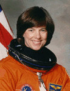

Lyndon B. Johnson Space Center
Houston, Texas 77058
|
National Aeronautics and Space Administration Lyndon B. Johnson Space Center Houston, Texas 77058 |
 |
Biographical Data |
||
Bonnie J. Dunbar (Ph.D.)
NASA ASTRONAUT (former)
PERSONAL DATA: Born March 3, 1949, in Sunnyside, Washington.
EDUCATION: Graduated from Sunnyside High School, Sunnyside, Washington, in 1967; received bachelor of science and master of science degrees in ceramic engineering from the University of Washington in 1971 and 1975, respectively; and a doctorate in Mechanical/Biomedical Engineering from the University of Houston, 1983. Certified Professional Engineer in Texas.
ORGANIZATIONS: Member of the American Institute of Aeronautics and Astronautics (AIAA), American Ceramic Society (ACS), the National Institute of Ceramic Engineers (NICE), Tau Beta Pi, Materials Research Society ( MRS), International Academy of Astronautics (IAF), Society of Women Engineers (SWE), Association of Space Explorers (ASE).
SPECIAL HONORS: Associate Fellow, AIAA. Elected to the National Academy of Engineers (2002). American Ceramic Society James I. Mueller Award, Cocoa Beach, Florida. (2000). Inducted into the Women in Technology International (WITI) Hall of Fame in 2000. NASA Space Flight Medals (1985, 1990, 1992, 1995 and 1998). Superior Accomplishment Award (1997). Member, National Science Foundation (NSF) Engineering Advisory Board, 1993-1999. NASA Exceptional Achievement Medal(1996). NASA Outstanding Leadership Award (1993). Fellow of American Ceramic Society (1993). Design News Engineering Achievement Award (1993). IEEE Judith Resnik Award (1993). Society of Women Engineers Resnik Challenger Medal (1993). Museum of Flight Pathfinder Award (1992). AAES National Engineering Award (1992). NASA Exceptional Service Award (1991). University of Houston Distinguished Engineering Alumna (1991). M.R.S. President’s Award (1990). ACS Schwaltzwalder P.A.C.E. Award (1990). University of Washington Engineering Alumni Achievement (1989). NASA Exceptional Service Medal (1988). ACS Life Membership (1986). General Jimmy Doolittle Fellow of the Aerospace Education Foundation (1986). American Ceramic Society (ACS) Greaves-Walker Award (1985). Rockwell International Engineer of the Year in 1977.
EXPERIENCE: Following graduation in 1971, Dr. Dunbar worked for Boeing Computer Services for two years as a systems analyst. From 1973 to 1975, she conducted research for her master’s thesis in the field of mechanisms and kinetics of ionic diffusion in sodium beta-alumina. In 1975, she conducted research at Harwell Laboratories in Oxford, England. Her work there involved the wetting behavior of liquids on solid substrates. Following her work in England, she accepted a senior research engineer position with Rockwell International Space Division in Downey, California. Her responsibilities included developing equipment and processes for the manufacture of the Space Shuttle thermal protection system in Palmdale, California. She also represented Rockwell International as a member of the Dr. Kraft Ehricke evaluation committee on prospective space industrialization concepts. Dr. Dunbar completed her doctorate at the University of Houston in Houston, Texas. Her multi-disciplinary dissertation (materials science and physiology) involved evaluating the effects of simulated space flight on bone strength and fracture toughness. Dr. Dunbar has served as an adjunct assistant professor in Mechanical Engineering at the University of Houston.
Dr. Dunbar is a private pilot with over 200 hours in single engine land aircraft, has logged more than 1000 hours flying time in T-38 jets as co-pilot, and has over 100 hours as co-pilot in a Cessna Citation Jet.
NASA EXPERIENCE: Dr. Dunbar accepted a position as a payload officer/flight controller at the Lyndon B. Johnson Space Center in 1978. She served as a guidance and navigation officer/flight controller for the Skylab reentry mission in 1979 and was subsequently designated project officer/payload officer for the integration of several Space Shuttle payloads.
Dr. Dunbar became a NASA astronaut in August 1981. Her technical assignments have included verification of Shuttle flight software at the Shuttle Avionics Integration Laboratory (SAIL), serving as a member of the Flight Crew Equipment Control Board, participation as a member of the Astronaut Office Science Support Group, and supporting operational development of the remote manipulator system (RMS). She has served as chief of the Mission Development Branch. In 1993, Dr. Dunbar served as Deputy Associate Administrator, Office of Life and Microgravity Sciences, NASA Headquarters, Washington, D.C. In February 1994, she lived in Star City, Russia, for 13-months training as a back-up crew member for a 3-month flight on the Russian Space Station, Mir. In March 1995, she was certified by the Russian Gagarin Cosmonaut Training Center as qualified to fly on long duration Mir Space Station flights. From October 1995 to November 1996, she was detailed to the NASA JSC Mission Operations Directorate as Assistant Director where she was responsible for chairing the International Space Station Training Readiness Reviews, and facilitating Russian/American operations and training strategies. From June 1998 to July 2003 she served as Assistant Director to the NASA Johnson Space Center (JSC) with a focus on University Research. From October 2003 until January 2005, she was Deputy Associate Director for Biological Sciences and Applications. From January–September 2005 she served as Associate Director, Technology Integration and Risk Management. Dr. Dunbar retired from NASA in September 2005 to serve as President and CEO of the Seattle Museum of Flight, Seattle, Washington.
A veteran of five space flights, Dr. Dunbar has logged more than 1,208 hours (50 days) in space. She served as a mission specialist on STS 61-A in 1985, STS-32 in 1990, and STS-71 in 1995, and was the Payload Commander on STS-50 in 1992, and STS-89 in 1998.
SPACE FLIGHT EXPERIENCE: STS 61-A Challenger (October 30-November 6, 1985), was the West German D-1 Spacelab mission. It was the first to carry eight crew members, and was also the first in which payload activities were controlled in Germany. More than 75 scientific experiments were completed in the areas of physiological sciences, materials science, biology, and navigation. During the flight, Dr. Dunbar was responsible for operating Spacelab and its subsystems and performing a variety of experiments. Her mission training included six months of experiment training in Germany, France, Switzerland, and The Netherlands. STS 61-A launched from the Kennedy Space Center, Florida, and returned to land at Edwards Air Force Base, California. Mission duration was 7 days, 44 minutes 51 seconds.
STS-32 Columbia (January 9-20, 1990), launched from the Kennedy Space Center, Florida, and returned to a night landing at Edwards Air Base in California. During the flight, the crew successfully deployed the Syncom IV-F5 satellite, and retrieved the 21,400-pound Long Duration Exposure Facility (LDEF) using the RMS. They also operated a variety of middeck experiments including the Microgravity Disturbance Experiment (MDE) using the Fluids Experiment Apparatus (FEA), Protein Crystal Growth (PCG), American Flight Echocardiograph (AFE), Latitude/Longitude Locator (L3), Mesoscale Lightning Experiment (MLE), Characterization of Neurospora Circadian Rhythms (CNCR),and the IMAX Camera. Dr. Dunbar was prime operator for the RMS retrieval of LDEF, and was principal investigator for the MDE/FEA Experiment. Additionally, numerous medical test objectives, including in-flight lower body negative pressure (LBNP), in-flight aerobic exercise and muscle performance were conducted to evaluate human adaptation to extended duration missions. Mission duration was 10 days, 21 hours, 01 minute, 38 seconds.
STS-50 Columbia (June 25 to July 9, 1992). Dr. Dunbar was the Payload Commander on STS-50, the United States Microgravity Lab-1 mission which was dedicated to microgravity fluid physics, materials science and life sciences. Over 30 experiments sponsored by over 100 U.S. investigators were housed in the “Spacelab” in the Shuttle’s Payload Bay. A payload crew of four operated around-the-clock for 13 days performing experiments in scientific disciplines such as protein crystal growth, electronic and infrared detector crystal growth, surface tension physics, zeolite crystal growth, and human physiology. Mission duration was 13 days, 19 hours, 30 minutes and 4 seconds.
STS-71 Atlantis (June 27 to July 7, 1995), was the first Space Shuttle mission to dock with the Russian Space Station Mir, and involved an exchange of crews. The Atlantis was modified to carry a docking system compatible with the Russian Mir Space Station. Dr. Dunbar served as MS-3 on this flight which also carried a Spacelab module in the payload bay in which the crew performed medical evaluations on the returning Mir crew. These evaluations included ascertaining the effects of weightlessness on the cardio/vascular system, the bone/muscle system, the immune system, and the cardio/pulmonary system. Mission duration was 9 days, 19 hours, 23 minutes and 8 seconds, traveling 4.1 million miles in 153 orbits of the earth.
STS-89 Endeavour (January 22-31, 1998), was the eighth Shuttle-Mir docking mission during which the crew transferred more than 9,000 pounds of scientific equipment, logistical hardware and water from Space Shuttle Endeavour to Mir. Dr. Dunbar was the Payload Commander, responsible for all payload activities including the conduct of 23 technology and science experiments. In the fifth and last exchange of a U.S. astronaut, STS-89 delivered Andy Thomas to Mir and returned with David Wolf. Mission duration was 8 days, 19 hours and 47 seconds.
SEPTEMBER 2005
{kind=link}